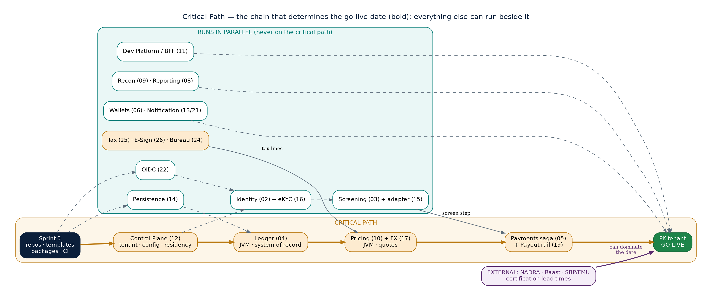

All 24 services and adapters, both applications, and the external providers they bind to. Hover or click any node to trace its connections and open its documents.

Sprint 0 \u2192 Control Plane \u2192 Ledger \u2192 Pricing + FX \u2192 Payments + Payout rail \u2192 go-live. Everything else in the graph above has slack \u2014 it's necessary, but a delay there doesn't move the date the way a delay on this chain does.